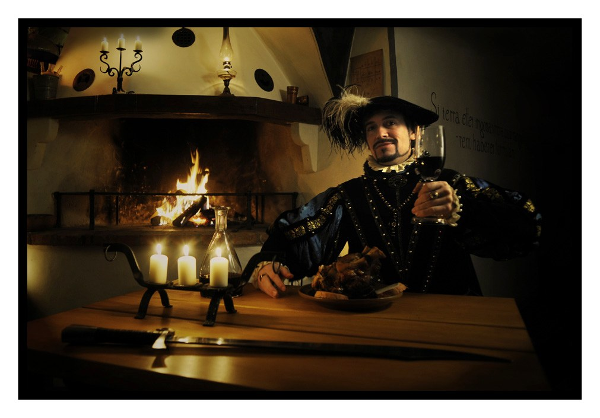
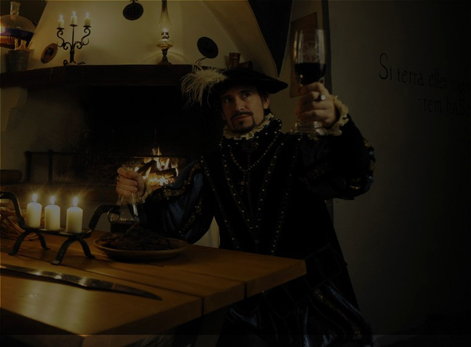

Přenes se s námi do časů, kdy v těchto zdech věhlasní alchymisté
ve službách posledních Rožmberků vařili elixíry — a dnes se tu vaří krmě,
za kterou by i císař Rudolf poslal posla.
Roku 1584 přijíždí do Českého království největší vzdělanci své doby — alchymisté Edward Kelley a John Dee. Když se jejich rozmluvy s anděly znelíbí církvi i císaři, uchýlí se potají na sídlo Viléma z Rožmberka: třeboňský zámek.
Právě zde, praví legenda, se jim podařilo získat kámen mudrců — a dodnes prý zůstává ukryt v zámeckých zdech. Naše krčma stojí v místech, kde alchymisté bádali, hodovali a popíjeli.


Pořádáme hostiny, jaké zažil málokdo — s programem na míru dle vašich přání a představ. Klenutý sál pojme 60 hodovníků, k tomu salonek pro uzavřenou společnost.